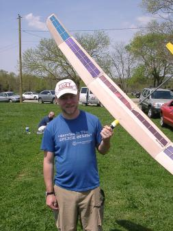
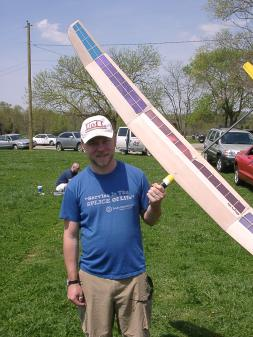

The Allegro Lite is a built-up 2-meter competition model sailplane with a composite (kevlar, carbon fiber) reinforced spar designed by Dr. Mark Drela. The finished model should weigh around 18 ounces and be capable of of a full-pedal winch launch.
UPDATE: I’ve recently (April 2005) completed my Allegro-Lite, and she ended up right under 19oz all-up-weight. She is a great flyer and I’ve managed to hand-launch her into thermals with ease! Awesome plane, and takes a winch launch very well!
FURTHER UPDATE (August 2005): Oh no! My Allegro-Lite went down in a blaze of glory! For some still-unknown reason, my Allegro-Lite went into the ground from about 200'-300' up. It impacted the ground about a 1/4 mile away from me over some trees. All pieces and parts were recovered. A repair is expected to take some time...
 
